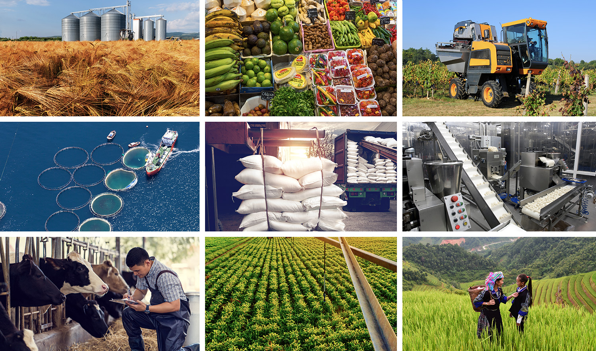

Pertanian berkelanjutan adalah cara untuk menghasilkan makanan yang sehat bagi konsumen dan hewan, tidak merusak lingkungan, manusiawi untuk pekerja, menghormati hewan, memberikan upah yang adil kepada petani, dan mendukung serta meningkatkan komunitas pedesaan. Ini adalah sistem pertanian yang fokus pada produksi tanaman dan ternak jangka panjang dengan dampak minimal terhadap lingkungan. Pertanian berkelanjutan merupakan gabungan praktik tanaman dan hewan yang ramah lingkungan. Ini adalah cara bertani yang memperhatikan pola alam dan menjaga keseimbangan ekosistem. Ini adalah cara bertani yang menggunakan teknik untuk melindungi lingkungan, kesehatan masyarakat, komunitas manusia, dan kesejahteraan hewan. Ini adalah cara bertani yang secara ekonomi layak dan bertanggung jawab secara sosial. Ini adalah cara bertani yang fokus pada masa depan.
Pertanian berkelanjutan mencakup praktik yang mengutamakan konservasi lingkungan, kesehatan tanah, manajemen air yang efisien, konservasi keanekaragaman hayati, ketahanan iklim, kelayakan ekonomi, keadilan sosial, ketahanan pangan, dan ketahanan komunitas. Dengan mempromosikan sistem tanam yang beragam, meminimalkan dampak lingkungan, dan mendukung mata pencaharian pedesaan, pertanian berkelanjutan memastikan kesejahteraan baik bagi manusia maupun planet. Ini memastikan pasokan pangan bagi orang miskin dengan menstabilkan hasil panen, menyediakan input yang terjangkau, meningkatkan kesuburan tanah, menghemat air, mendiversifikasi mata pencaharian, memperkuat ketahanan komunitas, membangun ketahanan iklim, dan mengurangi pemborosan pangan. Manfaat ini sangat penting untuk meningkatkan ketahanan pangan dan mengurangi kemiskinan di kalangan populasi yang rentan.
Tantangan untuk pangan dan pertanian berkelanjutan sangat kompleks dan multifaset. Tantangan tersebut termasuk kebutuhan untuk meningkatkan produksi pangan untuk memenuhi permintaan populasi global yang terus berkembang, sambil juga mengatasi dampak negatif lingkungan dan sosial dari pertanian. Tantangan ini semakin diperburuk oleh perubahan iklim, yang menyebabkan kejadian cuaca yang lebih sering dan parah, seperti kekeringan, banjir, dan gelombang panas, serta mengancam stabilitas sistem produksi pangan. Selain itu, degradasi sumber daya alam, seperti tanah, air, dan keanekaragaman hayati, sedang merusak keberlanjutan jangka panjang pertanian. Mengatasi tantangan-tantangan ini memerlukan pendekatan holistik yang mengintegrasikan pertimbangan lingkungan, sosial, dan ekonomi, serta mendorong adopsi praktik dan teknologi berkelanjutan oleh petani dan pemangku kepentingan lainnya.
Mengembangkan pertanian berkelanjutan melibatkan penilaian terhadap praktik saat ini, penetapan tujuan yang jelas, dan memprioritaskan pengelolaan lingkungan, keberlanjutan ekonomi, dan keadilan sosial. Langkah-langkah kunci meliputi mempromosikan pendekatan agroekologi, mendukung diversifikasi, meningkatkan kesehatan tanah, mengoptimalkan penggunaan air, meminimalkan penggunaan bahan kimia, berinvestasi dalam riset dan inovasi, menyediakan pelatihan dan layanan penyuluhan, memfasilitasi akses pasar, mempromosikan kebijakan yang mendukung, dan mendorong kolaborasi serta kemitraan. Dengan mengintegrasikan strategi-strategi ini, pertanian berkelanjutan dapat mengatasi tantangan global dan memastikan ketahanan pangan, keberlanjutan lingkungan, serta pembangunan pedesaan.